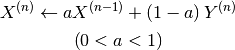
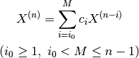

8. Ground State Calculation¶
8.1. Calculation method¶
ProteinDF allows the user to perform closed-shell, open-shell, and open-shell restricted calculations according to the electron configuration of the object. The calculation method can be specified using the keyword method.
8.2. Specifying electron count/occupied state¶
8.2.1. Restricted Kohn-Sham method calculation¶
This method performs the calculation of a closed-shell molecule (singlet) where an electron pair occupies a single molecular orbital. To perform the calculation, specify method = rks.
Further, specify the electron configuration using the keyword method/rks/occlevel. For example, when ten paired electrons occupy five low energy molecular orbitals, specify as follows:
method/rks/occlevel = [1 - 5]
Here the lowest energy orbital is No. 1, and as the number increases, a higher energy orbital is assigned.
Specify electron count by using the keyword rks/electrons. In the case of ten electrons, specify as follows:
rks/electrons = 10
と記述します。
Note
For closed-shell calculations, the rks/electrons value must be an even number.
Note
The user can also specify the electron configuration as in method/rks/occlevel = [1-4, 6]. In this case, electrons occupy the first to fourth orbitals, and the sixth orbital.
8.2.2. Unrestricted Kohn-Sham method calculation¶
This method performs the calculation of an open-shell molecule, where the electron configurations of alpha spin and beta spin differ. To perform the calculation, specify method=uks.
Specify electron counts for alpha and beta spins using uks/alpha_electrons and uks/beta_electrons, respectively. Similarly, specify the electron configuration for alpha and beta spins with method/uks/alpha-spin-occlevel and method/uks/beta-spin-occlevel, respectively
Warning
Specify a uks/alpha_electrons value equal to or larger than the uks/beta_electrons value.
8.2.3. Restricted open shell Kohn-Sham method calculation¶
This method performs the calculation by categorizing closed- and open-shell electron configurations. To perform the calculation, specify method=roks.
Specify electron counts with method/roks/closed_shell_electrons and method/roks/open_shell_electrons, and electron configuration with method/roks/closed_shell_occlevel and method/roks/open_shell_occlevel.
8.3. Specifying initial guess¶
Use the keyword guess to specify the initial guess for SFC loops.
8.3.1. core¶
Generates initial guess using core Hamiltonian. Specify guess=core.
8.3.2. Hückel¶
Generates initial guess with the Hückel method. Specify guess=huckel.
8.3.3. Harris functional¶
Generates initial guess with the Harris functional. Specify guess=harris. This function is not available for some atomic species.
8.3.4. Approximated electron density¶
Generates initial guess with an approximated electron density. Specify guess=rho. A reliable result may not be obtained unless the RI method is applied.
8.3.5. LCAO coefficient matrix¶
Generates initial guess with the LCAO coefficient matrix. Specify guess=lcao. When using this function, prepare the LCAO coefficient matrix beforehand.
Note
In the current version of the program, it is necessary to prepare LCAO text files and OCC text files in the calculation directory. This specification may change in the future.
8.3.6. Density matrix¶
Uses a density matrix as the initial guess. Specify guess=density. Prepare the density matrix beforehand.
Note
In the current version of the program, it is necessary to put the 0th density matrix file in the work directory (fl_Work). This specification may change in the future.
8.4. Coulomb term calculation¶
8.4.1. Selecting calculation engine¶
Four-center two electron integrals required in Coulomb term calculation is a rate-determining process. Several calculation engines are implemented on ProteinDF for the calculation. Use the keyword J_engine for selection.
8.4.1.1. conventional¶
Calculates four-center two electron integrals at each SCF iteration to obtain the Coulomb term.
8.4.1.2. RI_J¶
Calculates three-center integrals at each SCF iteration based on the RI method to obtain the Coulomb term. The calculation accuracy depends on auxiliary basis sets. This is the default engine of ProteinDF.
8.4.1.3. Cholesky decomposition¶
Based on the Cholesky decomposition method, obtains Cholesky vectors for four-center two-electron integrals before SCF loops. The Coulomb term is obtained during each SCF iteration through density matrix operation. High-speed computation is allowed since no molecular integral is executed during SCF calculations, but a large amount of memory and disk is consumed. Specify J_engine=CD to select this engine.
8.5. Fock exchange term calculation¶
8.5.1. Selecting calculation engine¶
The Fock exchange term calculation is also rate-determining since it requires four-center two electron integrals. Use the keyword k_engine to select a calculation engine.
8.5.1.1. conventional¶
Calculates four-center two electron integrals at each SCF iteration to obtain the Fock exchange term. This is the default engine of ProteinDF. Specify K_engine=conventional to select this engine.
8.5.1.2. Cholesky decomposition¶
Obtains the Fock exchange term using the Cholesky decomposition method, as in the Coulomb term calculation. This engine uses the Cholesky vectors obtained through the Cholesky decomposition for the Coulomb term calculation. Specify K_engine=CD to select this engine.
8.5.2. Hybrid functional method and Hartree-Fock method¶
The user can perform a hybrid functional calculation or Hartree-Fock calculation by specifying the following value in the parameter xc-potential:
HF
Performs electron state calculations by the Hartree-Fock method.
B3LYP
Performs hybrid functional calculations with the Becke 3-parameter.
8.6. Exchange-correlation term calculation¶
In ProteinDF, the user can use numerical integral calculation or analytical calculation (grid-free method) to obtain the exchange-correlation term of the Kohn-Sham matrix, as well as the exchange-correlation energy. The default is the numerical integrals.
8.6.1. Selecting the grid¶
Specify the numerical grid with the parameter xc-potential/grid-type. The default is the SG-1 grid. Refer to Appendix for details.
8.6.2. Functionals available for numerical integral method¶
Specify functionals with xc_potential. The available functionals are as follows:
- SVWN~
- SVWN
- BLYP
- B3LYP
- HFB
Note
For the exchange-correlation functional followed by a tilde ~, ProteinDF obtains the exchange-correlation term with an approximated electron density based on the RI method.
8.6.3. Grid free method¶
Calculates the exchange-correlation term with a grid-free method. For details, see the keyword grid_free in Appendix.
8.7. Level shift calculation¶
This method allows shifting the energy level of a particular orbital. For details, see the keyword level_shift in Appendix.
8.8. Convergence acceleration techniques¶
ProteinDF provides several convergence algorisms to achieve a stable and efficient convergence during SFC loops. Use the keyword scf_acceleration for selection
8.8.1. damping method¶
The physical quantity used in the last iteration is mixed to the current in a certain ratio. When Y (n) represents the physical quantity obtained at the nth SCF iteration, the updated amount X (n) can be obtained as follows:

Here, specify the mixing ratio (a) and target physical quantity with scf_acceleration/damping/damping_factor and scf_acceleration/damping/damping_type, respectitvely.
Example
scf_acceleration/damping/damping_factor = 0.85
scf_acceleration/damping/damping_type = density_matrix
8.8.2. Anderson’s method¶
Employs the quadratic convergence method developed by Anderson. The equations when using the physical quantities at the past two points are as follows:
![X^{\left(n\right)}=u^{\left(n-1\right)}+b^{\left(n-1\right)}\left(v^{\left(n\right)}-u^{\left(n-1\right)}\right)
u^{\left(n-1\right)}=X^{\left(n-1\right)}+\theta^{\left(n-1\right)}\left(X^{\left(n-2\right)}-X^{\left(n-1\right)}\right)
v^{\left(n\right)}=Y^{\left(n\right)}+\theta^{\left(n-1\right)}\left(Y^{\left(n-1\right)}-Y^{\left(n\right)}\right)
\theta^{\left(n-1\right)}=\frac{\left(r^{\left(n-1\right)},r^{\left(n-1\right)}-r^{\left(n-2\right)}\right)}{\left(r^{\left(n-1\right)}-r^{\left(n-2\right)},r^{\left(n-1\right)}-r^{\left(n-2\right)}\right)}
r^{\left(n-1\right)}=Y^{\left(n\right)}-X^{\left(n-1\right)}
\left(u,v\right)=\sum_{i}u_{i}v_{i}w_{i}](_images/math/ed94d372ad60da30d82583a9e620ea24233ea812.png)
Here, specify the b(n-1) with scf-acceleration/anderson/damping-factor.
The damping method is applied before the Andarson’s method is started. Specify the SCF iteration number starting the Anderson’s method with scf_acceleration/anderson/start_number.
8.8.3. DIIS method¶
Employs the Direct Inversion of the Iterative Subspace (DIIS) method by Pulay. The DIIS method assumes that a new physical quantity X (n) can be obtained by the linear combination of X (n-i) in the past.

Here, specify the number of references M with scf-acceleration/diis/number-of-diis.
The damping method is applied before the DIIS method is started. Specify the SCF iteration number starting the DIIS method with scf-acceleration/diis/start-number.